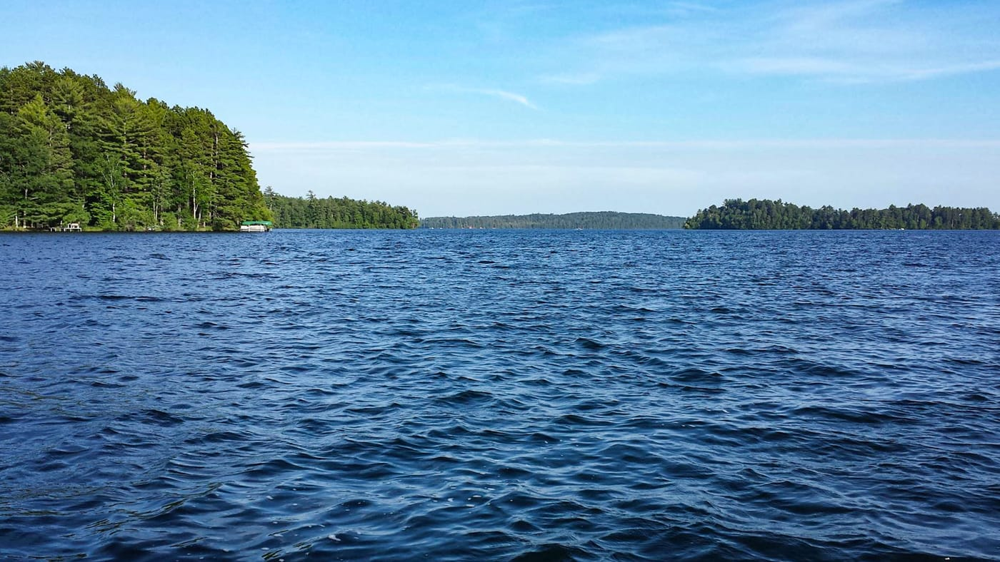

Reducing CO2 Emissions
Solar energy displaced 2.6 million metric tons of CO2 in Wisconsin in 2025, equivalent to removing 550,000 cars from the road for a year. By replacing coal and gas, solar helps combat climate change and improve air quality.
Quick Fact: Solar farms in Wisconsin prevent 1.8 million pounds of air pollutants annually.
Source: Environmental Protection Agency (EPA), 2025
Protecting Land & Water
Solar farms require less land than coal plants and produce no water pollution. Projects like Two Creeks Solar use native grasses to prevent soil erosion and protect local watersheds.
Did You Know? Two Creeks Solar’s native grasses support 50+ species of local plants.
Source: Wisconsin Department of Natural Resources, 2025
Supporting Wildlife

Solar sites with pollinator-friendly vegetation, like those in Madison, support bees, butterflies, and birds. These efforts enhance biodiversity and align with Wisconsin’s conservation goals.
Tip: Homeowners can plant pollinator gardens to complement solar installations.
Source: National Renewable Energy Laboratory (NREL), 2025